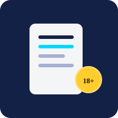
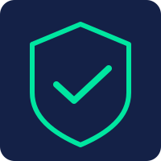

1. How Stripchat tokens work: quick basics
Tokens are the way value moves on Stripchat. You obtain them — most commonly through Stripchat’s official checkout — and then use them per platform rules to support creators or access features. Token packages, pricing, and available payment methods are determined by Stripchat and may differ by region and by time.
That official path is the baseline. Promotions, where they exist, are additions layered on top of the baseline — not replacements. A legitimate promotion complements the official flow; it does not tell you to bypass it.
When you encounter phrases like stripchat tokens 2027 free or Stripchat Tokens 2027 Free online, interpret them as “are there possible promotional credits in 2027?” rather than “is there a permanent free-token supply?” The second reading sets you up for disappointment or risky shortcuts.
What a legitimate token flow looks like
- Clear source: Either Stripchat checkout or a disclosed affiliate promotion with current terms.
- Clear conditions: Who qualifies, when, and what limits apply.
- No credential sharing: Your Stripchat password is never required on a promotion landing page.
- Clear disclosures: Language like “possible,” “if eligible,” “availability varies” rather than absolute guarantees.
2. Why safety matters more in this topic area
High demand plus limited supply creates a classic environment for misleading pages. When many people search StripChat Tokens 2027 or strip chat tokens 2027 at once, low-quality sites rush to capture that traffic — sometimes without caring whether their claims match reality.
Safety is not just about malware (though that is part of it). It is also about expectation management, data minimization, and respecting platform rules. A safe approach protects your account standing, your device, and your time.
We frame safety as a habit, not a one-time check. The same user can visit a seemingly clean page today and a copycat tomorrow. A repeatable checklist matters more than memorizing any single URL.
3. How to identify legitimate promotions vs scams
Legitimate signals
- Visible promotion window and date (e.g., “Hourly window: 14:00–15:00”)
- Eligibility and limits stated in plain language
- HTTPS, correct domain, and a linked terms/info page
- Qualified wording: “possible,” “may be available,” “if eligible”
- No request for passwords or off-platform payments
Suspicious signals
- Promises “instant unlimited” or “100% guaranteed” tokens for everyone.
- Requires installing strip chat mod, stripchat mod apk, or profile files.
- Asks for Stripchat login, 2FA codes, or payment PINs on an external page.
- Shows only testimonials, no terms or timestamps.
- Uses aggressive pop-ups that trap you or demand immediate action.
Consider a before-and-after example. A legitimate hourly-draw notice might read: “Possible 50-token hourly draw — 16:00–17:00, one consideration per user, availability not guaranteed, see current terms.” A suspicious clone might read: “GET 50 TOKENS EVERY HOUR GUARANTEED — DOWNLOAD MOD NOW!” The difference in tone and transparency is itself diagnostic.
When in doubt, close the tab and verify via Stripchat’s official help resources. No legitimate promotion requires you to silence your skepticism.

4. Red flags checklist (quick scan in 30 seconds)
- Does the page claim Stripchat Tokens 2027 Free for every visitor with zero conditions? If yes, suspect hype.
- Does it ask for your Stripchat password or 2FA code? If yes, leave immediately.
- Does it push stripchat mod apk, StripChat Mod apk, or Strip Chat Mod tokens installers? If yes, avoid — unverified mods risk malware and rule violations.
- Does it demand an upfront payment on an external site to “unlock” tokens? If yes, do not pay — legitimate affiliate draws do not operate that way.
- Does it hide eligibility, limits, or timing? If yes, it lacks the transparency of a responsible promotion.
- Does it use absolute words like “risk-free,” “instant,” “official,” or “guaranteed” without evidence? If yes, treat as unreliable.
5. How to browse in a privacy-conscious way
Privacy-conscious browsing does not require specialized tools — just a few consistent habits:
- Use a current browser with automatic updates, HTTPS indicators, and phishing protections enabled.
- Check the URL bar. Confirm the domain matches the intended source (striptks.live, striptokens.live, stripfreetokens.com) before interacting. Typosquatting is common in high-interest topics.
- Minimize data shared at first glance. Read terms and timing before entering email or other details. If the page asks for more data before showing terms, reconsider.
- Prefer private or secondary windows for initial inspection if you are evaluating an unfamiliar promotion. Close the window if anything feels off.
- Review privacy information. Look for a visible privacy or info link. Absence of any privacy context is a cautionary signal.
- Keep security basics in place. Device updates, reputable security software where applicable, and a unique Stripchat password you never reuse elsewhere.
These habits help even outside token promotions. They are useful for any external affiliate page you might encounter.
6. Understanding external promotions (like the three sources on this site)
External promotions built around StripCash affiliation host the promotional presentation while Stripchat remains the underlying platform. That split explains two things you will notice:
- Presentation varies. Each affiliate site may phrase timing, eligibility, and outcome disclosure differently. One may show a countdown, another plain text.
- Timing varies. Campaigns rotate. A page with a live banner today may show general information tomorrow.
Because we are an independent guide, we do not control those sites. Our role is to help you interpret what you see when you open them.
What “Verify current terms” actually involves
- Open the live promotion URL directly (use our footer/header links to avoid typo domains).
- Find the promotion-specific block — not the general footer.
- Note the hour window, who qualifies, and what action is required right now.
- Look for a timestamp or dated terms link.
- Decide based on today’s information, not on cached screenshots.
Building that five-step habit helps you navigate phrases like strip chat tokens 2027 without being misled by outdated content.
7. Eligibility questions explained
Eligibility answers “Is this for me, right now?” Typical dimensions include:
Dimension 1: Age and legal capacity
All Stripchat-related promotions require you to be 18+ and to comply with applicable laws. That baseline is non-negotiable.
Dimension 2: Region and availability
Campaigns may be regional. A window that is active for one country may be inactive elsewhere. Look for “availability varies” or explicit region notes on the banner.
Dimension 3: Timing and limits
Hourly windows impose timing limits. Per-hour caps or per-user limits are also common. If you attempt to enter the same hour multiple times, you may be rate-limited per the stated terms.
Dimension 4: Account and compliance
Where an account is required, its standing matters. Fraud or abuse flags — including trying to evade limits with duplicate accounts or VPN switching — may trigger restrictions per promotion rules.
Importantly, eligibility is not a moral judgment. Being ineligible for one hour does not mean you will never be eligible. It may simply mean this campaign, this hour, in this region, does not apply to you.
8. Checklist before you click any token offer
- Confirm the domain matches the expected source.
- Confirm HTTPS and lack of certificate warnings.
- Read the banner for the current hour — not last week’s screenshot.
- Identify eligibility (18+, region, limits) before following steps.
- Scan for password or payment requests — legitimate hourly draws do not require them.
- Look for responsible qualifiers (“possible,” “may,” “if eligible”).
- Plan your exit: If no banner appears, close and check again later — do not chase mods.
This short list fits on a sticky note. Keeping it visible while you explore high-interest topics protects against rushed decisions.
9. Related search terms: mods, APKs, and why we caution against them
Search engines surface mod-related queries alongside legitimate guides. We address them explicitly so you can interpret them safely:
- strip chat mod — Generic “mod” phrase often tied to payment-bypass claims. Not a legal method; avoids official flow, risks account and device.
- stripchat mod apk / StripChat Mod apk — Android-specific. Third-party APKs promising token injection from unknown hosts are frequently malware vectors.
- Strip Chat Mod tokens — Implies a mod injects tokens. No verified, platform-authorized mod creates official tokens outside the platform’s systems.
- Stripchat Mod ipk / Stripchat mod iphone — iOS-related. Legitimate iOS apps come from the App Store. Sideloaded IPAs that claim token generation may violate policy and harm security.
- StripChat Tokens 2027 / Stripchat Tokens 2027 Free / stripchat tokens 2027 free — Search shorthand for “possible free token opportunities in 2027.” Useful for finding guides like this, but still requires verifying current terms.
We bold these terms where we provide corrective context. That approach helps searchers land on responsible information rather than risky installers. If you came here after typing stripchat mod apk, consider this page your off-ramp: prefer official app sources and the legal promotional routes described here.
10. Responsible use guide
Responsible use is about aligning participation with limits — technical limits, eligibility limits, and personal limits.
Respect technical limits
Do not attempt to bypass rate limits, replay entries, or automate clicks against promotion terms. Those actions can be flagged and may affect future eligibility.
Respect eligibility limits
If a banner indicates you are outside the region or outside the window, accept it. Chasing exceptions with duplicate identities rarely ends well.
Respect personal limits
Checking a promotional page should be optional and brief. If you find yourself feeling pressured — especially by countdown timers designed to manufacture urgency — pause. Close the tab, take a break, and return with fresh eyes.
Finally, remember that no promotion is part of core Stripchat functionality. If an external draw were to disappear tomorrow, the main platform would continue to operate normally via official purchases. Framing draws as optional extras reduces the sense of scarcity.
11. What to avoid
- Any method that explicitly violates Stripchat terms — including payment bypass via strip chat mod or StripChat Mod apk tooling.
- External pages that require payment before you receive tokens — especially when no official checkout is involved.
- Instructions that tell you to reuse passwords or share 2FA codes to “sync” tokens.
- Accounts or services that sell “guaranteed tokens” via DM or social comments.
- Content that discourages you from reading terms or that hides timing and eligibility in fine print without a visible banner.
Avoiding these removes most of the risk in this topic area. The remaining work — verifying current terms — is much simpler once obvious hazards are filtered out.
12. Who this information may be suitable for
This safety guide may be most useful for adults who:
- Have seen hourly draw mentions and want a neutral checklist before clicking.
- Search for Stripchat Tokens 2027 Free or related phrases and want context without hype.
- Are comfortable verifying terms themselves rather than relying on guarantees.
- Prefer to protect account standing and device security over chasing uncertain shortcuts.
It may be less suitable for those seeking a guaranteed pipeline of tokens or instructions to hack the platform. Those goals fall outside legal, possible methods.
13. The three possible sources explained
We include the same three affiliate-connected sources on every page so you can cross-check. Each has a slightly different presentation:
Striptks.live
Often presents a concise hourly banner and an info link. Good for a quick “is there a live window now?” check.
Check Striptks.liveStripTokens.live
Tends to provide more descriptive context and timing notes. Useful for cross-referencing eligibility language.
Visit StripTokens.liveStripFreeTokens.com
Status-plus-terms layout that helps you compare capped availability or recent change notices.
Explore StripFreeTokens.comAll links open in a new tab. Each site sets its own current terms; compare rather than assuming any single page is definitive for the hour.
| Source | Check this | Good sign | Caution sign |
|---|---|---|---|
| Striptks.live | Banner for current hour | Timestamped window, qualified language | Absolute guarantees, password request |
| StripTokens.live | Eligibility & outcome disclosure | Clear limits, HTTPS, info link | Pushes stripchat mod apk installs |
| StripFreeTokens.com | Terms & cap info | Recent terms date, caps noted | Payment to “unlock” draw |
14. Frequently asked questions
It depends on the site’s transparency. Look for HTTPS, correct domains, clear terms, eligibility, and responsible qualifiers (“possible,” “may be available”). Avoid pages that demand passwords, push unverified mods like stripchat mod apk, or promise guaranteed tokens.
Guarantees for every visitor, password or 2FA requests, external payments to “open” draws, forced StripChat Mod apk installs, and lack of any timing or eligibility disclosure.
No. Legal methods do not involve hacks. Mods such as Strip Chat Mod tokens or Stripchat Mod ipk installers are not legal token paths and can jeopardize device security and account standing.
Use an updated browser with HTTPS protections, check domains carefully, share minimal data before seeing terms, and close tabs that pressure you. Private windows for initial checks can help you inspect before interacting.
They are presented as possible legal sources via StripCash affiliation. This site is independent and informational, not necessarily affiliated with Stripchat. Verify current terms on each destination.
Yes, if a draw was limited, capped, or randomized. Hourly draws are conditional promotions; many eligible entries may not result in tokens in a given hour. Check the live terms for how outcomes are disclosed.
Checking near the start of an hour when a promotion is rumored to be active is reasonable. Repeated checks within the same hour rarely create availability. If no banner appears for several hours, the campaign may be paused.
Social posts can be outdated or exaggerated. Use them as a prompt to check the live promotion pages directly, not as authoritative terms. Prioritize the destination site’s current banner over screenshots.
Generally no. Attempting to evade regional limits may violate promotion terms and trigger fraud checks. Follow the stated regional availability rather than trying to circumvent it.
Close it. Typos, inconsistent branding, or broken HTTPS can indicate a copycat page. Navigate via the links you trust (such as those in this guide’s header/footer) and re-verify.
15. Summary & next steps
Safety in the context of possible Stripchat token promotions comes down to three habits: verify current terms on the live page, keep expectations “possible” rather than guaranteed, and never trade passwords or installs for promised tokens. Whether you encountered this guide via Stripchat Tokens 2027 Free, strip chat mod, or Stripchat mod iphone searches, the same advice applies: use privacy-conscious checks, respect eligibility, and avoid bypass hacks.
If you want more depth on mechanics, revisit our legal methods guide or the hourly-draw explainer. Both connect directly to this safety checklist. When you verify, start with the three sources below and decide based on today’s banner — not on yesterday’s hype.
Video: youtube.com/shorts/qteChmbOszA — For context only; not an official Stripchat guarantee.
Disclaimer
This page provides educational information only and does not constitute legal or financial advice. External promotions set their own current terms that may change. Token availability and results are not guaranteed. You must be 18+ and follow applicable laws and platform rules. Do not share sensitive credentials with unverified sites.